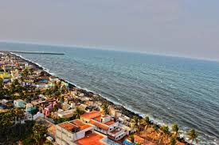
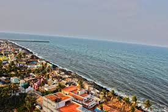

Best of TamilNadu
₹30,000 /-(Onwards per person)
TamilNadu
6D/5N
→ Holiday Category :Fixed Tours
→ Holiday Type
→ Country :India
→ City covered : Madurai, Thriveni Sangamam, Pondicherry, Kanchipuram, Rameswaram, Mahabalipuram, Chennai

 



Day-1 Arriving Madurai
Welcome to our travels which is the best travels in our country. At first we will meet at Madurai and then we will take you to the hotel and fresh up their and have your breakfast and start our journey by visiting Madurai Meenakshi Temple and after that you have the lunch their and you can shop their and by evening you can go back to hotel and take the rest.
Meals
Breakfast
Indian Lunch
Indian Dinner
Stay
Madurai
Day-2 Arriving Thriveni Sangamam
Early morning witness the Sunrise from the Thriveni Sangamam and then you return back and have the breakfast in the hotel and then checkout from their and start going to Pondicherry and then visit the Auroville and then you will have the lunch and visit the Pondicherry Beach and then you have to stay their to night in the hotel.
Meals
Breakfast
Indian Lunch
Indian Dinner
Stay
Pondicherry
Day-3 Arriving Kanchipuram
Next day morning you will start going to Kanchipuram and it’s about 110 Kms(3 hrs) from Pondicherry to Kanchipuram and then have the breakfast their and then visit the famous Kamakshi Amman Temple and have the lunch and then visit some other temples like Varadharaja Perumal Temple, Devarajaswami Temple and then return to the hotel and take the rest.
Meals
Breakfast
Indian Lunch
Indian Dinner
Stay
Kanchipuram
Day-4 Arriving Rameswaram
Early morning you checkout the hotel their and then you start traveling to Rameswaram (it may take 2hrs from Kanchipuram) have the breakfast and then visit the famous temple in the Rameswaram temple and have the lunch and then visit the beach in the evening see the sunset and go back to the hotel and stay the night their.
Meals
Breakfast
Indian Lunch
Indian Dinner
Stay
Rameswaram
Day-5 Arriving Mahabalipuram
Early morning you will start going to the Mahabalipuram and it may take 1hr from the Rameswaram and then after going their you have the breakfast and then you will visit the Arjuna’s Penance, Descent of the Ganges, Krishna’s Butter Ball and have the lunch their and visit Shore Temple and visit the Beach at sunset and stay at resort overnight.
Meals
Breakfast
Indian Lunch
Indian Dinner
Stay
Mahabalipuram
Day-6 Arriving Chennai
Last day you will be visiting the Chennai have the breakfast and spend the whole day by shopping and visit the some mall and visit Museum, zoological park ,kolli hills and have the lunch and Iskcon Temple and finally visit the Elliot’s Beach in evening and we will drop in the Chennai airport.
Meals
Breakfast
Indian Lunch
Tour Concludes